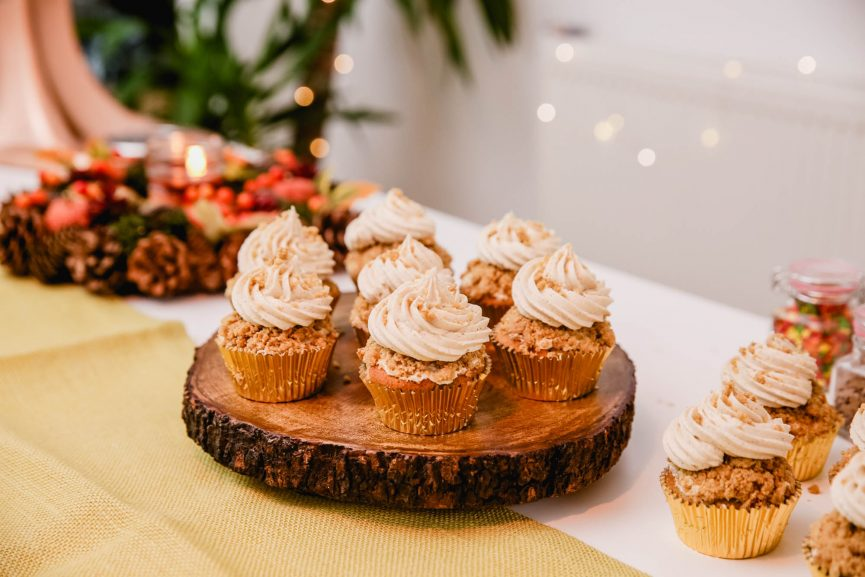
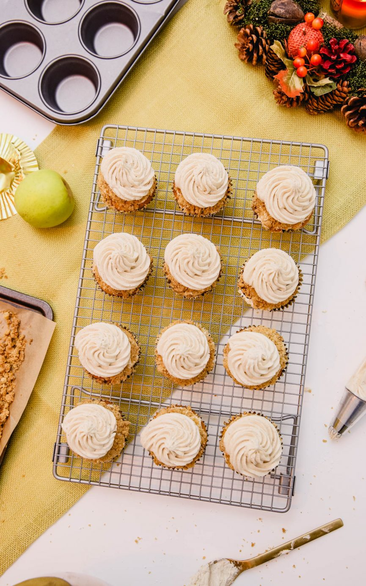
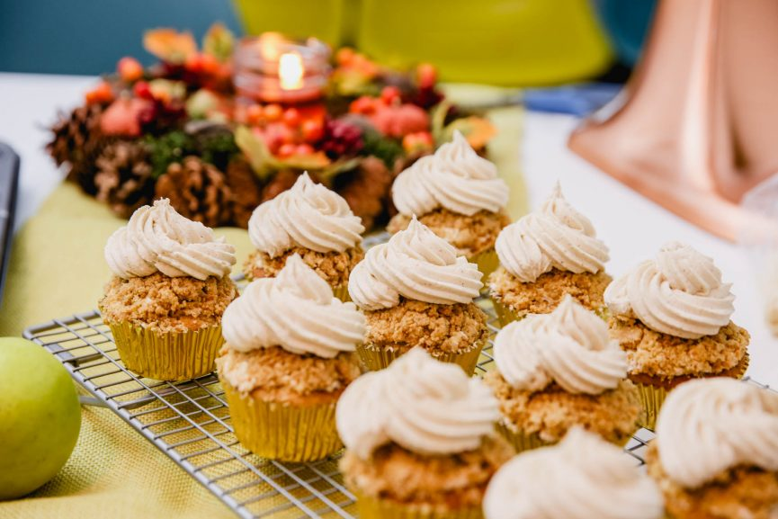
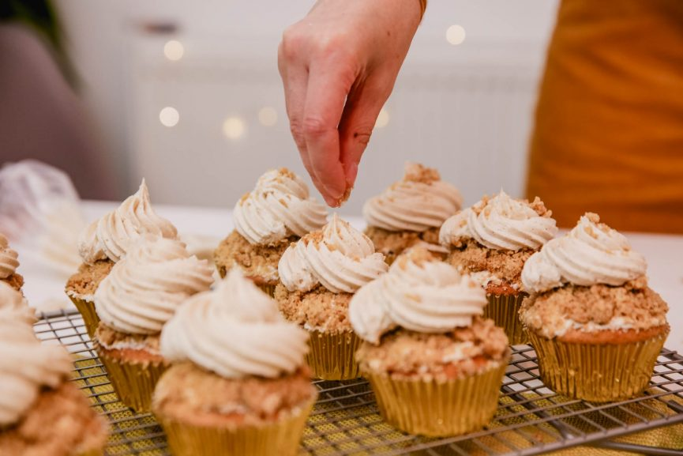
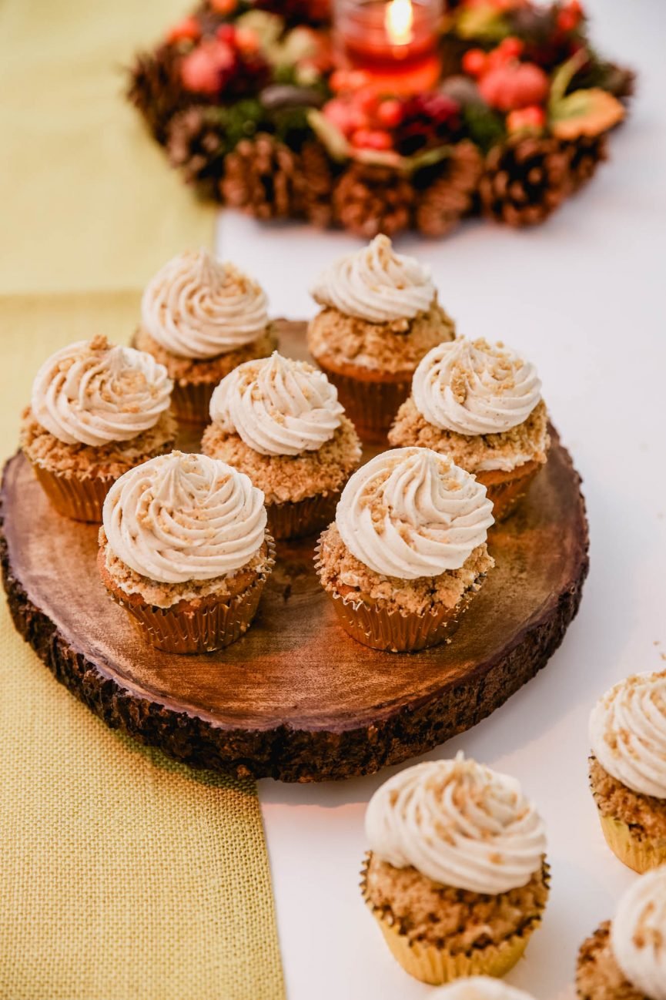

How to make apple crumble cupcakes!

The ingredients to make the cupcakes :
- 2 Eggs
- 230g Plain Flour
- 155g Sugar
- 125g Unsalted Butter at Room Temperature
- 2 tsps Baking Powder
- 1 tsp Ground Cinnamon
- 1/2 tsp Salt
- Apples
The ingredients to make the crumble :
- 75g Golden Caster Sugar
- 100g Salted Chilled Butter
- 140g Self-Raising Flour
- 1 tsp Vanilla Extract
- 1/4 tsp Ground Cinnamon
The ingredients to make the icing :
- 1tsp Cinnamon
- 1tsp Vanilla Extract
- 110g Soft Brown Sugar
- 250g Unsalted Butter at Room Temperature
- 400g Icing Sugar
- 2 tspb Whole Milk


How to make the cupcakes :
- Start by making the apple mixture. Peel, core and then chop the apples into little squares.
- Place in a large saucepan with enough water to cover them and simmer for 5-7 minutes until soft, and then leave until cool.
- Cream together butter and caster sugar until light and fluffy.
- Add the eggs, then vanilla extract until combined.
- Add the flour, baking powder, cinnamon and salt and gently mix until combined.
- Carefully fold in the apple mix.
- Spoon the mixture into a lined cupcake tin.
- Bake for 15-20 minutes until golden brown.
Now for the crumble topping! :
- In a large bowl, rub together the butter, flour, cinnamon and vanilla until nice and crumbly, and then stir in the sugar.
- Spread the crumble mix onto a lined baking tray and bake for 5-10 minutes until just golden.
And the icing! :
- Beat together the butter and brown sugar with the cinnamon and vanilla extract, for 5-7 minutes until fully combined and light and fluffy.
- Add the icing sugar a little bit at a time and continue to beat on a low speed.
- Add the milk a tablespoon at a time until the icing is light and creamy but stiff enough to hold it’s shape.
To build the cupcakes :
- Once the cupcakes and crumble are fully cooled, spoon the icing into a piping bag fitted with a star nozzle.
- Spread a small amount of icing on the top of each cupcake, and add the crumble mixture.
- Using the piping bag, pipe a small swirl of icing onto the top of the crumble on each cupcake. Top with a small sprinkle of crumble, and enjoy!
Now you have fabulous cupcakes!

